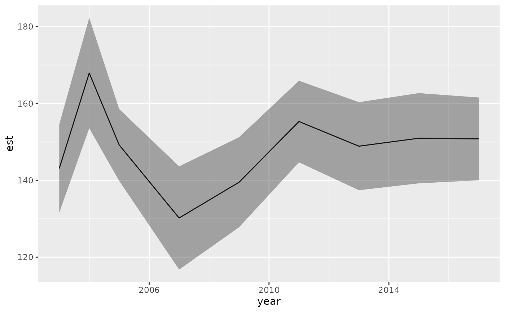

Extract a relative biomass/abundance index, center of gravity, effective area occupied, or weighted average
Source:R/index.R
get_index.RdCalculate quantities derived from a model fitted with sdmTMB() by
combining its predictions over a grid (newdata) for each time step, with
standard errors and confidence intervals that account for uncertainty in
both fixed and random effects:
Usage
get_index(
obj,
newdata = NULL,
bias_correct = TRUE,
level = 0.95,
area = 1,
offset = NULL,
silent = TRUE,
derived_link = NULL,
predict_args = list(),
...
)
get_index_split(
obj,
newdata,
bias_correct = FALSE,
nsplit = 1,
level = 0.95,
area = 1,
offset = NULL,
silent = FALSE,
predict_args = list(),
derived_link = NULL,
...
)
get_cog(
obj,
newdata = NULL,
bias_correct = FALSE,
level = 0.95,
format = c("long", "wide"),
area = 1,
offset = NULL,
silent = TRUE,
derived_link = NULL,
predict_args = list(),
...
)
get_weighted_average(
obj,
newdata = NULL,
vector,
bias_correct = FALSE,
level = 0.95,
area = 1,
offset = NULL,
silent = TRUE,
derived_link = NULL,
predict_args = list(),
...
)
get_eao(
obj,
newdata = NULL,
bias_correct = FALSE,
level = 0.95,
area = 1,
offset = NULL,
silent = TRUE,
derived_link = NULL,
predict_args = list(),
...
)Arguments
- obj
A model fitted with
sdmTMB(). For backwards compatibility, output frompredict.sdmTMB()withreturn_tmb_object = TRUEis also accepted (not forget_index_split()).- newdata
A data frame of locations (and times) to combine predictions over, usually a grid covering the area of interest replicated for each time step (see
replicate_df()). Same requirements asnewdatainpredict.sdmTMB(). Results are returned only for time steps innewdata. Required unlessobjis legacy prediction output or was fitted with the deprecateddo_index = TRUE.- bias_correct
Logical: apply bias correction? Predictions plugged in at the estimated random effects can be biased once transformed to the response scale and summed; bias correction (Thorson and Kristensen 2016) adjusts the estimate for this. Recommended for final results but slower, so it can be turned off while exploring models. The standard errors are not bias-corrected.
- level
The confidence level of the intervals.
- area
The area of each row of
newdata(e.g., grid cell area), used to weight predictions when combining them: (1) a numeric vector with one value per row ofnewdata, (2) a single value for all rows, or (3) the name of a column innewdata. With the default of 1, the index is a sum of densities rather than an area-weighted total. See Details for other uses.- offset
An optional numeric vector of offset values, one per row of
newdata(not a column name). IfNULL(default), the offset is 0, so predictions are per unit of the offset (e.g., density rather than catch when the offset is log area swept).- silent
Logical: suppress TMB's output while calculating? In
get_index_split(), controls the progress bar instead.- derived_link
Optional link whose inverse is applied to the linear predictor, in place of the model's own link, before combining predictions. Currently only available for non-delta
binomial(),censored_binomial(),betabinomial(), andcensored_betabinomial()models fit withlink = "cloglog"; there,derived_link = "log"sums expected event rates (e.g., catch per hook) instead of probabilities. See the hook competition vignette.- predict_args
A named list of other arguments to pass to
predict.sdmTMB()(supplynewdataandoffsetdirectly). For example,list(re_form = NA)calculates the quantity with the spatial and spatiotemporal random fields set to zero, andlist(re_form_iid = NA)does the same for IID random effects.- ...
Passed to
TMB::sdreport()orRTMB::sdreport().- nsplit
The number of chunks of time steps to calculate the index in separately. For large grids or models,
nsplit > 1reduces memory use but is usually slower.- format
The shape of the output:
"long"or"wide"(see Value).- vector
A numeric vector of values to average (e.g., depth or temperature), one per row of
newdata.
Value
A data frame with one row per time step (time column named as in the
fitted model), a type column, and:
get_index()andget_index_split():est(the index),lwrandupr(confidence interval),log_est(log ofest),se(standard error oflog_est), andse_natural(standard error ofest).get_cog(): withformat = "long"(default), two rows per time step, one per coordinate (coordis"X"or"Y"), withest,lwr,upr, andse(standard error ofest). Withformat = "wide", one row per time step with these columns suffixed_xand_y.get_eao():est,lwr,upr,log_est, andse(standard error oflog_est).get_weighted_average():est,lwr,upr, andse(standard error ofest).
Details
get_index(): total abundance or biomass (an index).get_index_split(): the same, calculated a few time steps at a time to reduce memory use.get_cog(): center of gravity (the mean x and y coordinates, weighted by abundance).get_eao(): effective area occupied.get_weighted_average(): the mean of any variable weighted by abundance (e.g., the average depth or temperature occupied).
For each time step, predictions are converted to the response scale (for
delta models, combining both components), multiplied by area, and
combined. With \(\mu_i\) the prediction and \(a_i\) the area for row
\(i\):
Index: \(\sum_i a_i \mu_i\).
Weighted average: \(\sum_i a_i \mu_i v_i / \sum_i a_i \mu_i\), for values \(v_i\) given by
vector. Center of gravity is the weighted average of the x and y coordinates, in the units of the coordinates used to build the mesh.Effective area occupied: \((\sum_i a_i \mu_i)^2 / \sum_i a_i \mu_i^2\), the area needed to hold the total if density were spread evenly at the abundance-weighted average density.
Standard errors use the delta method. Confidence intervals for the index and effective area occupied are calculated on the log scale, so they are asymmetric and always positive. Those for the center of gravity and weighted average are calculated on the original scale.
More generally, area is any multiplier on the response-scale
predictions. For example, binomial or beta-binomial models fit to
proportions (with weights giving the number of trials) predict
proportions per trial. Setting area to a standard number of trials
(e.g., hooks per longline set) gives an index of expected counts. The
fitting weights are not reused automatically.
References
Geostatistical model-based indices of abundance (along with many newer papers):
Shelton, A.O., Thorson, J.T., Ward, E.J., and Feist, B.E. 2014. Spatial semiparametric models improve estimates of species abundance and distribution. Canadian Journal of Fisheries and Aquatic Sciences 71(11): 1655–1666. doi:10.1139/cjfas-2013-0508
Thorson, J.T., Shelton, A.O., Ward, E.J., and Skaug, H.J. 2015. Geostatistical delta-generalized linear mixed models improve precision for estimated abundance indices for West Coast groundfishes. ICES J. Mar. Sci. 72(5): 1297–1310. doi:10.1093/icesjms/fsu243
Geostatistical model-based center of gravity:
Thorson, J.T., Pinsky, M.L., and Ward, E.J. 2016. Model-based inference for estimating shifts in species distribution, area occupied and centre of gravity. Methods Ecol Evol 7(8): 990–1002. doi:10.1111/2041-210X.12567
Geostatistical model-based effective area occupied:
Thorson, J.T., Rindorf, A., Gao, J., Hanselman, D.H., and Winker, H. 2016. Density-dependent changes in effective area occupied for sea-bottom-associated marine fishes. Proceedings of the Royal Society B: Biological Sciences 283(1840): 20161853. doi:10.1098/rspb.2016.1853
Bias correction:
Thorson, J.T., and Kristensen, K. 2016. Implementing a generic method for bias correction in statistical models using random effects, with spatial and population dynamics examples. Fisheries Research 175: 66–74. doi:10.1016/j.fishres.2015.11.016
See also
get_index_sims() for derived quantities from simulation draws.
Examples
# \donttest{
if (ggplot2_installed()) {
library(ggplot2)
# use a small number of knots for this example to make it fast:
mesh <- make_mesh(pcod, c("X", "Y"), n_knots = 60)
# fit a spatiotemporal model:
m <- sdmTMB(
data = pcod,
formula = density ~ 0 + as.factor(year),
time = "year", mesh = mesh, family = tweedie(link = "log")
)
# prepare a prediction grid:
nd <- replicate_df(qcs_grid, "year", unique(pcod$year))
# biomass index:
ind <- get_index(m, newdata = nd, bias_correct = TRUE)
ind
ggplot(ind, aes(year, est)) + geom_line() +
geom_ribbon(aes(ymin = lwr, ymax = upr), alpha = 0.4) +
ylim(0, NA)
# the same, calculated in 2 chunks of years;
# slower but uses less memory for very large grids:
ind <- get_index_split(m, newdata = nd, nsplit = 2, bias_correct = TRUE)
# center of gravity:
cog <- get_cog(m, newdata = nd, format = "wide")
cog
ggplot(cog, aes(est_x, est_y, colour = year)) +
geom_point() +
geom_linerange(aes(xmin = lwr_x, xmax = upr_x)) +
geom_linerange(aes(ymin = lwr_y, ymax = upr_y)) +
scale_colour_viridis_c()
# effective area occupied:
eao <- get_eao(m, newdata = nd)
eao
ggplot(eao, aes(year, est)) + geom_line() +
geom_ribbon(aes(ymin = lwr, ymax = upr), alpha = 0.4) +
ylim(0, NA)
# weighted average (e.g., depth-weighted by biomass):
wa <- get_weighted_average(m, newdata = nd, vector = nd$depth)
wa
ggplot(wa, aes(year, est)) + geom_line() +
geom_ribbon(aes(ymin = lwr, ymax = upr), alpha = 0.4)
}
#> Calculating index in 2 chunks ■■■■■■■■■■■■■■■■ 50% | ETA: 0s
#> Calculating index in 2 chunks ■■■■■■■■■■■■■■■■■■■■■■■■■■■■■■■ 100% | ETA: 0s
#> Bias correction is turned off.
#> It is recommended to turn this on for final inference.
#> Bias correction is turned off.
#> It is recommended to turn this on for final inference.
#> Bias correction is turned off.
#> It is recommended to turn this on for final inference.

# }